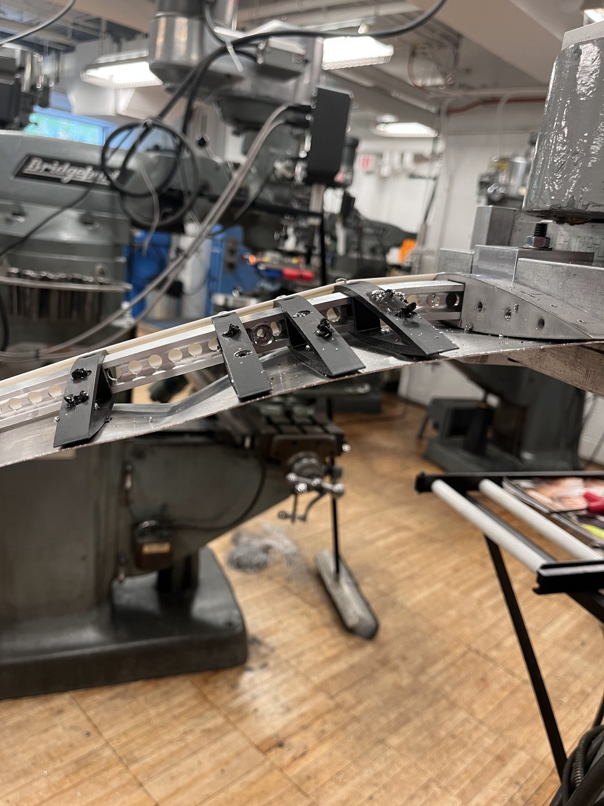
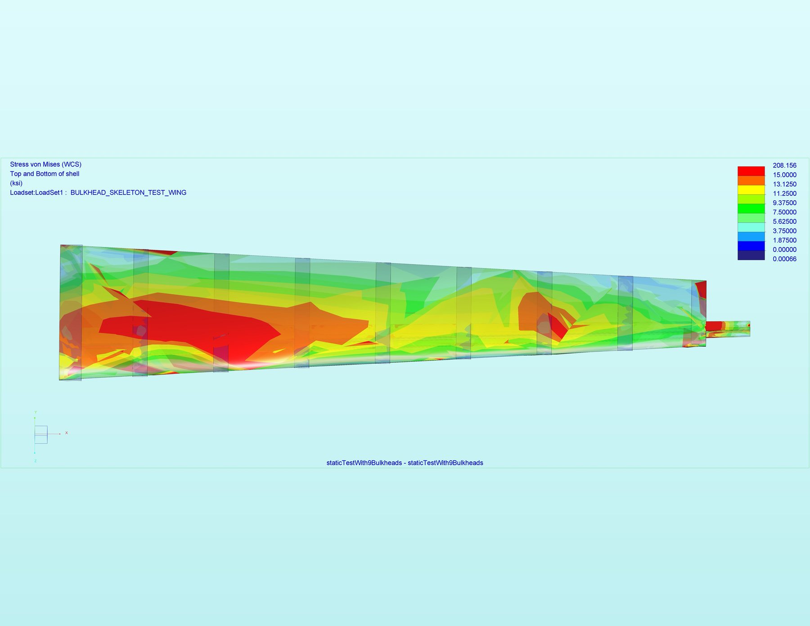

01 STRUCTURES / TEAM PROJECT
Aircraft wing
A wing built for a 97 lbf end load, then tested to a final load of 300 lbf.
With my team in Engineering Design, I designed, manufactured, and tested the wing. I used static and buckling finite element analysis to refine bulkhead number and spacing before fabrication.
Read MAE 321 final design report ↗FEAStructuresFabricationTesting